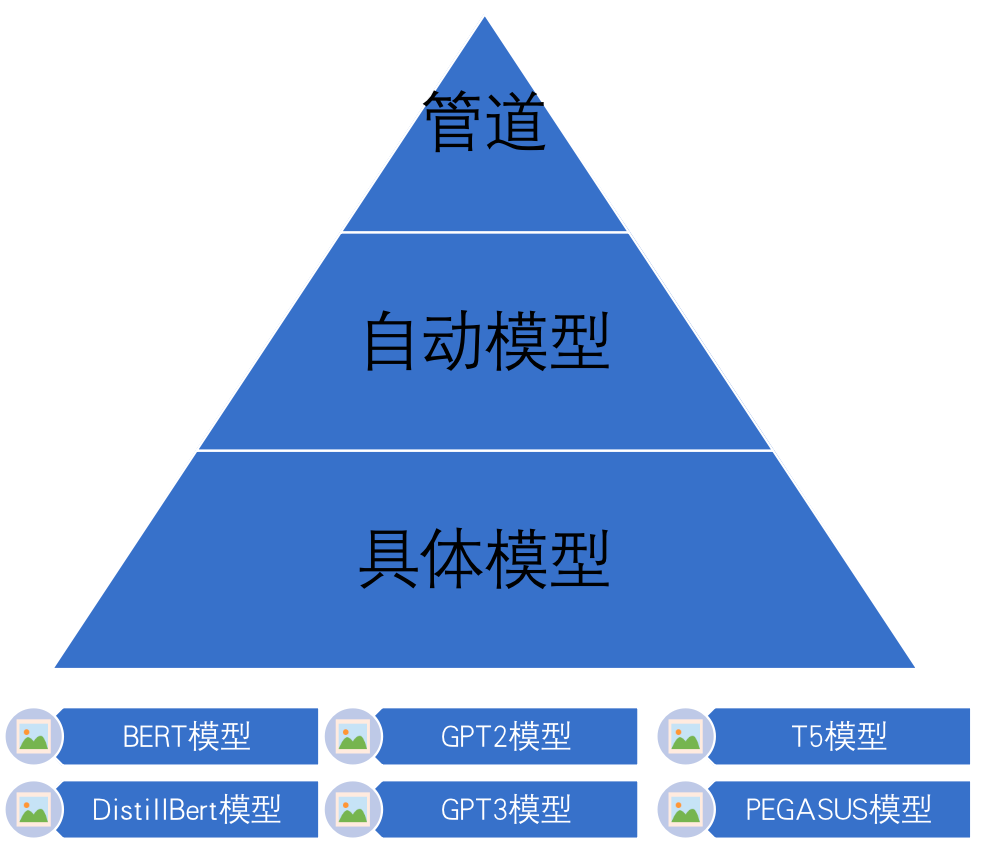
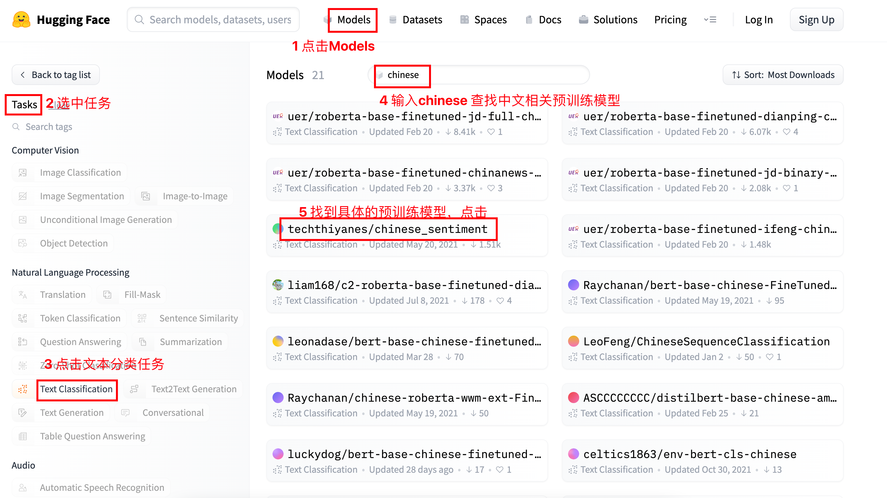
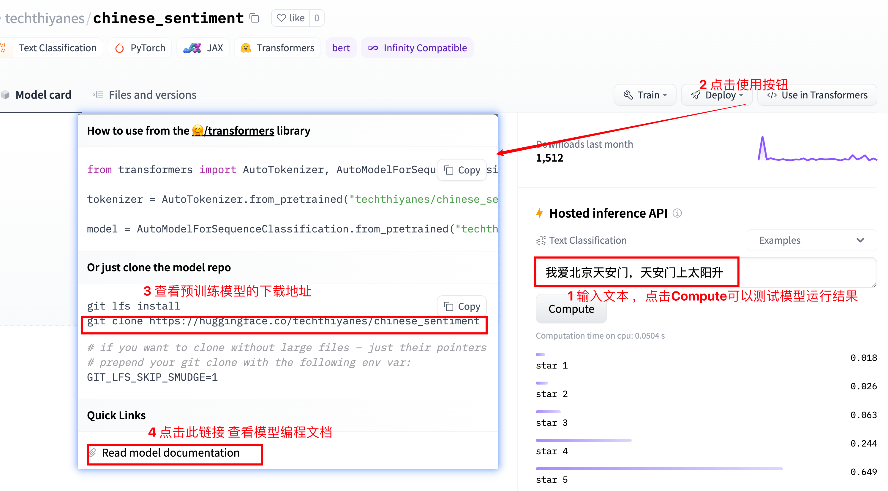
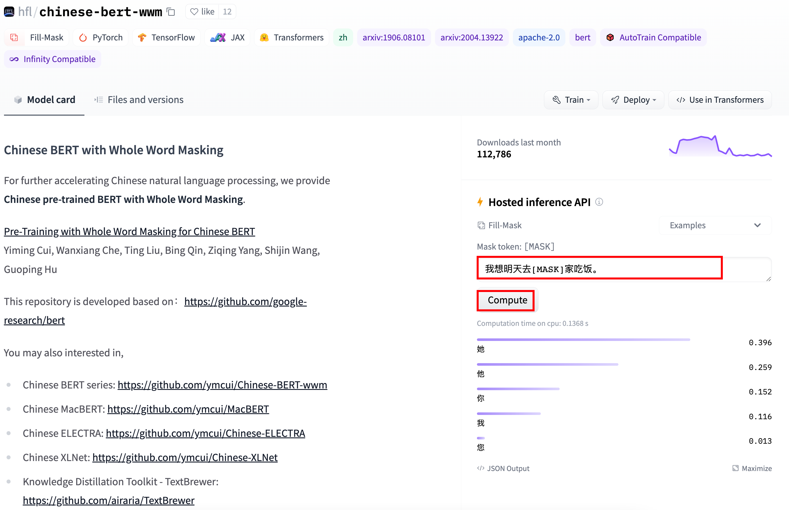

8 Transformers库使用
学习目标¶
- 了解并掌握管道方式完成基本NLP任务
- 了解并掌握自动模型方式完成基本NLP任务
- 了解并掌握具体模型方式完成基本NLP任务
1 了解Transformers库¶
-
Huggingface总部位于纽约，是一家专注于自然语言处理、人工智能和分布式系统的创业公司。他们所提供的聊天机器人技术一直颇受欢迎，但更出名的是他们在NLP开源社区上的贡献。Huggingface一直致力于自然语言处理NLP技术的平民化(democratize)，希望每个人都能用上最先进(SOTA, state-of-the-art)的NLP技术，而非困窘于训练资源的匮乏。同时Hugging Face专注于NLP技术，拥有大型的开源社区。尤其是在github上开源的自然语言处理，预训练模型库 Transformers，已被下载超过一百万次，github上超过24000个star。
-
Huggingface Transformers 是基于一个开源基于 transformer 模型结构提供的预训练语言库。它支持 Pytorch，Tensorflow2.0，并且支持两个框架的相互转换。Transformers 提供了NLP领域大量state-of-art的 预训练语言模型结构的模型和调用框架。
- 框架支持了最新的各种NLP预训练语言模型，使用者可快速的进行模型调用，并且支持模型further pretraining 和 下游任务fine-tuning。举个例子Transformers 库提供了很多SOTA的预训练模型，比如BERT, GPT-2, RoBERTa, XLM, DistilBert, XLNet, CTRL。
- 社区Transformer的访问地址为：https://huggingface.co/，见下图。
- 备注
- 1 点击 Model链接可查看、下载预训练模型。点击Datasets链接可查看、下载数据集。点击Docs链接可以阅读预训练模型的编程文档，十分方便
- 2 SOTA（state-of-the-art）是指目前对某项任务“最好的”算法或技术
2 Transformers库三层应用结构¶
- 管道（Pipline）方式：高度集成的极简使用方式，只需要几行代码即可实现一个NLP任务。
- 自动模型（AutoMode）方式：可载入并使用BERTology系列模型。
- 具体模型（SpecificModel）方式：在使用时，需要明确指定具体的模型，并按照每个BERTology系列模型中的特定参数进行调用，该方式相对复杂，但具有较高的灵活度。

3 管道方式完成多种NLP任务¶
注意：若虚拟机中已经安装transformers，以下安装步骤不需再次执行
# 注意在执行clone之前，要查看当前是在那个目录下，比如$HOME/nlpdev/目录下
# 克隆huggingface的transfomers文件
git clone https://github.com/huggingface/transformers.git
# 进行transformers文件夹
cd transformers
# 切换transformers到指定版本
git checkout v4.19.0
# 安装transformers包
pip install .
# 安装datasets数据库，
# 注意workon xxx虚拟机开发环境，在虚拟机开发环境下安装
pip install datasets
3.1 文本分类任务¶
- 文本分类是指模型可以根据文本中的内容来进行分类。例如根据内容对情绪进行分类，根据内容对商品分类等。文本分类模型一般是通过有监督训练得到的。对文本内容的具体分类，依赖于训练时所使用的样本标签。
# 导入工具包
import torch
from transformers import pipeline
import numpy as np
# 情感分类任务
def dm01_test_classification():
# 1 使用中文预训练模型chinese_sentiment
# 模型下载地址 git clone https://huggingface.co/techthiyanes/chinese_sentiment
# 2 实例化pipeline对象
my_model = pipeline(task='sentiment-analysis', model='./chinese_sentiment')
# my_model = pipeline(task='sentiment-analysis', model='./bert-base-chinese')
# 3 文本送给模型 进行文本分类
output = my_model('我爱北京天安门，天安门上太阳升。')
print('output--->', output)
# 结果输出
output---> [{'label': 'star 5', 'score': 0.6314294338226318}]
- pipeline函数可以自动从官网下载预训练模型，也可以加载本地的预训练模型
transformer库中预训练模型查找和下载


3.2 特征提取任务¶
- 特征抽取任务只返回文本处理后的特征，属于预训练模型的范畴。特征抽取任务的输出结果需要和其他模型一起工作。
# 特征抽取任务
def dm02_test_feature_extraction():
# 1 下载中文预训练模型 git clone https://huggingface.co/bert-base-chinese
# 2 实例化pipeline对象 返回模型对象
my_model = pipeline(task='feature-extraction', model='./bert-base-chinese')
# 3 给模型送数据 提取语句特征
output = my_model('人生该如何起头')
print('output--->', type(output), np.array(output).shape)
# 输出结果
# output---> <class 'list'> (1, 9, 768)
# 7个字变成9个字原因: [CLS] 人 生 该 如 何 起 头 [SEP]
- 不带任务头输出：特征抽取任务属于不带任务头输出，本bert-base-chinese模型的9个字，每个字的特征维度是768
- 带头任务头输出：其他有指定任务类型的比如文本分类，完型填空属于带头任务输出，会根据具体任务类型不同输出不同的结果
3.3 完型填空任务¶
- 完型填空任务又被叫做“遮蔽语言建模任务”，它属于BERT模型训练过程中的子任务。下面完成一个中文场景的完型填空。
# 完型填空任务
def dm03_test_fill_mask():
# 1 下载预训练模型 全词模型git clone https://huggingface.co/hfl/chinese-bert-wwm
# 2 实例化pipeline对象 返回一个模型
my_model = pipeline(task='fill-mask', model='chinese-bert-wwm')
# 3 给模型送数据 做预测
input = '我想明天去[MASK]家吃饭。'
output = my_model(input)
# 4 输出预测结果
print('output--->', output)
# 输出结果
# output--->
# [{'score': 0.34331339597702026, 'token': 1961, 'token_str': '她', 'sequence': '我 想 明 天 去 她 家 吃 饭.'},
# {'score': 0.2533259987831116, 'token': 872, 'token_str': '你', 'sequence': '我 想 明 天 去 你 家 吃 饭.'},
# {'score': 0.1874391734600067, 'token': 800, 'token_str': '他', 'sequence': '我 想 明 天 去 他 家 吃 饭.'},
# {'score': 0.1273055076599121, 'token': 2769, 'token_str': '我', 'sequence': '我 想 明 天 去 我 家 吃 饭.'},
# {'score': 0.02162978984415531, 'token': 2644, 'token_str': '您', 'sequence': '我 想 明 天 去 您 家 吃 饭.'}]
可以在官网在线查找完型填空结果

3.4 阅读理解任务¶
- 阅读理解任务又称为“抽取式问答任务”，即输入一段文本和一个问题，让模型输出结果。
# 阅读理解任务(抽取式问答)
def dm04_test_question_answering():
# 问答语句
context = '我叫张三，我是一个程序员，我的喜好是打篮球。'
questions = ['我是谁？', '我是做什么的？', '我的爱好是什么？']
# 1 下载模型 git clone https://huggingface.co/luhua/chinese_pretrain_mrc_roberta_wwm_ext_large
# 2 实例化化pipeline 返回模型
model = pipeline('question-answering', model='chinese_pretrain_mrc_roberta_wwm_ext_large')
# 3 给模型送数据 的预测结果
print(model(context=context, question=questions))
# 输出结果
'''
[{'score': 1.2071758523357623e-12, 'start': 2, 'end': 4, 'answer': '张三'},
{'score': 2.60890374192968e-06, 'start': 9, 'end': 12, 'answer': '程序员'},
{'score': 4.1686924134864967e-08, 'start': 18, 'end': 21, 'answer': '打篮球'}]
'''
3.5 文本摘要任务¶
- 摘要生成任务的输入一一段文本，输出是一段概况、简单的文字。
# 文本摘要任务
def dm05_test_summarization():
# 1 下载模型 git clone https://huggingface.co/sshleifer/distilbart-cnn-12-6
# 2 实例化pipline 返回模型
my_model = pipeline(task = 'summarization', model="distilbart-cnn-12-6")
# 3 准备文本 送给模型
text = "BERT is a transformers model pretrained on a large corpus of English data " \
"in a self-supervised fashion. This means it was pretrained on the raw texts " \
"only, with no humans labelling them in any way (which is why it can use lots " \
"of publicly available data) with an automatic process to generate inputs and " \
"labels from those texts. More precisely, it was pretrained with two objectives:Masked " \
"language modeling (MLM): taking a sentence, the model randomly masks 15% of the " \
"words in the input then run the entire masked sentence through the model and has " \
"to predict the masked words. This is different from traditional recurrent neural " \
"networks (RNNs) that usually see the words one after the other, or from autoregressive " \
"models like GPT which internally mask the future tokens. It allows the model to learn " \
"a bidirectional representation of the sentence.Next sentence prediction (NSP): the models" \
" concatenates two masked sentences as inputs during pretraining. Sometimes they correspond to " \
"sentences that were next to each other in the original text, sometimes not. The model then " \
"has to predict if the two sentences were following each other or not."
output = my_model(text)
# 4 打印摘要结果
print('output--->', output)
# 输出结果
output---> [{'summary_text': ' BERT is a transformers model pretrained on a large corpus of English data in a self-supervised fashion . It was pretrained with two objectives: Masked language modeling (MLM) and next sentence prediction (NSP) This allows the model to learn a bidirectional representation of the sentence .'}]
3.6 NER任务¶
- 实体词识别（NER）任务是NLP中的基础任务。它用于识别文本中的人名（PER）、地名（LOC）、组织（ORG）以及其他实体（MISC）等。例如：(王 B-PER) (小 I-PER) (明 I-PER) (在 O) (办 B-LOC) (公 I-LOC) (室 I-LOC)。其中O表示一个非实体，B表示一个实体的开始，I表示一个实体块的内部。
- 实体词识别本质上是一个分类任务（又叫序列标注任务），实体词识别是句法分析的基础，而句法分析优势NLP任务的核心。```
# NER任务
def dm06_test_ner():
# 1 下载模型 git clone https://huggingface.co/uer/roberta-base-finetuned-cluener2020-chinese
# 2 实例化pipeline 返回模型
model = pipeline('ner', model='roberta-base-finetuned-cluener2020-chinese')
# 3 给模型送数据 打印NER结果
print(model('我爱北京天安门，天安门上太阳升。'))
'''
[{'entity': 'B-address', 'score': 0.8838121, 'index': 3, 'word': '北', 'start': 2, 'end': 3},
{'entity': 'I-address', 'score': 0.83543754, 'index': 4, 'word': '京', 'start': 3, 'end': 4},
{'entity': 'I-address', 'score': 0.4240591, 'index': 5, 'word': '天', 'start': 4, 'end': 5},
{'entity': 'I-address', 'score': 0.7524443, 'index': 6, 'word': '安', 'start': 5, 'end': 6},
{'entity': 'I-address', 'score': 0.6949866, 'index': 7, 'word': '门', 'start': 6, 'end': 7},
{'entity': 'B-address', 'score': 0.65552264, 'index': 9, 'word': '天', 'start': 8, 'end': 9},
{'entity': 'I-address', 'score': 0.5376768, 'index': 10, 'word': '安', 'start': 9, 'end': 10},
{'entity': 'I-address', 'score': 0.510813, 'index': 11, 'word': '门', 'start': 10, 'end': 11}]
'''
4 自动模型方式完成多种NLP任务¶
4.1 文本分类任务¶
- 文本分类是指模型可以根据文本中的内容来进行分类。例如根据内容对情绪进行分类，根据内容对商品分类等。文本分类模型一般是通过有监督训练得到的。对文本内容的具体分类，依赖于训练时所使用的样本标签。
# 导入工具包
import torch
from transformers import AutoConfig, AutoModel, AutoTokenizer
from transformers import AutoModelForSequenceClassification, AutoModelForMaskedLM, AutoModelForQuestionAnswering
# AutoModelForSeq2SeqLM：文本摘要
# AutoModelForTokenClassification：ner
from transformers import AutoModelForSeq2SeqLM, AutoModelForTokenClassification
# 情感分类任务
def dm01_test_classification():
# 1 加载tokenizer
my_tokenizer = AutoTokenizer.from_pretrained('./chinese_sentiment')
# 2 加载模型
my_model = AutoModelForSequenceClassification.from_pretrained('./chinese_sentiment')
# 3 文本转张量
message = '人生该如何起头'
# 3-1 return_tensors='pt' 返回是二维tensor
msg_tensor1 = my_tokenizer.encode(text=message, return_tensors='pt', padding=True, truncation=True, max_length=20)
print('msg_tensor1--->', msg_tensor1)
# 3-2 不用return_tensors='pt'是一维列表
msg_list2 = my_tokenizer.encode(text=message, padding=True, truncation=True, max_length=20)
print('msg_list2--->', msg_list2)
msg_tensor2 = torch.tensor([msg_list2])
print('msg_tensor2--->', msg_tensor2)
# 4 数据送给模型
# 4-1
my_model.eval()
output1 = my_model(msg_tensor2)
print('情感分类模型头输出outpout1--->', output1)
# 4-2
output2 = my_model(msg_tensor2, return_dict=False)
print('情感分类模型头输出outpout2--->', output2)
- AutoTokenizer、AutoModelForSequenceClassification函数可以自动从官网下载预训练模型，也可以加载本地的预训练模型
- AutoModelForSequenceClassification类管理着分类任务，会根据参数的输入选用不同的模型。
- AutoTokenizer的encode()函数使用return_tensors=’pt‘参数和不使用pt参数对文本编码的结果不同
- AutoTokenizer的encode()函数使用padding='max_length'可以按照最大程度进行补齐，俗称打padding
- 调用模型的forward函数输入return_dict=False参数，返回结果也不同
程序运行结果
msg_tensor1---> tensor([[ 101, 782, 4495, 6421, 1963, 862, 6629, 1928, 102]])
msg_list2---> [101, 782, 4495, 6421, 1963, 862, 6629, 1928, 102]
msg_tensor2---> tensor([[ 101, 782, 4495, 6421, 1963, 862, 6629, 1928, 102]])
情感分类模型头输出outpout1---> SequenceClassifierOutput(loss=None, logits=tensor([[-2.7387, -1.7528, 0.2273, 2.0507, 1.4128]],
grad_fn=<AddmmBackward>), hidden_states=None, attentions=None)
情感分类模型头输出outpout2---> (tensor([[-2.7387, -1.7528, 0.2273, 2.0507, 1.4128]],
grad_fn=<AddmmBackward>),)
#注1:101代表[CLS] 102代表[SEP]
4.2 特征提取任务¶
- 特征抽取任务只返回文本处理后的特征，属于预训练模型的范畴。特征抽取任务的输出结果需要和其他模型一起工作。
# 特征提取任务-不带任务输出头的任务
def dm02_test_feature_extraction():
# 1 加载tokenizer
my_tokenizer = AutoTokenizer.from_pretrained(pretrained_model_name_or_path='./bert-base-chinese')
# 2 加载模型
my_model = AutoModel.from_pretrained(pretrained_model_name_or_path = './bert-base-chinese')
# 3 文本转张量
message = ['你是谁', '人生该如何起头']
msgs_tensor = my_tokenizer.encode_plus(text=message, return_tensors='pt', truncation=True, pad_to_max_length=True, max_length=30)
print('msgs_tensor--->', msgs_tensor)
# 4 给模型送数据提取特征
my_model.eval()
output = my_model(**msgs_tensor)
print('不带模型头输出output--->', output)
print('outputs.last_hidden_state.shape--->', output.last_hidden_state.shape) # torch.Size([1, 30, 768])
print('outputs.pooler_output.shape--->', output.pooler_output.shape) # torch.Size([1, 768])
- 不带任务头输出：特征抽取任务属于不带任务头输出，本bert-base-chinese模型的9个字，每个字的特征维度是768
- 带头任务头输出：其他有指定任务类型的比如文本分类，完型填空属于带头任务输出，会根据具体任务类型不同输出不同的结果
程序运行结果
msgs_tensor--->
# 1 input_ids对两个句子text2id以后的结果，
# 101表示段落开头，第一个102代表第一个句子结束，第二个102点第二个句子结束
# 后面的0表示 按照编码要求pad_to_max_length=True和max_length=30补充pad零
{'input_ids': tensor([[ 101, 872, 3221, 6443, 102, 782, 4495, 6421, 1963, 862, 6629, 1928,
102, 0, 0, 0, 0, 0, 0, 0, 0, 0, 0, 0,
0, 0, 0, 0, 0, 0]]),
# 2 token_type_ids表示段落标志0代表第一个句子，1代表第二个句子
'token_type_ids': tensor([[0, 0, 0, 0, 0, 1, 1, 1, 1, 1, 1, 1, 1, 0, 0, 0, 0, 0, 0, 0, 0, 0, 0, 0,
0, 0, 0, 0, 0, 0]]),
# 3 attention_mask表示注意力机制的掩码数据，1表示有真实数据，0表示是pad数据需要掩码
'attention_mask': tensor([[1, 1, 1, 1, 1, 1, 1, 1, 1, 1, 1, 1, 1, 0, 0, 0, 0, 0, 0, 0, 0, 0, 0, 0,
0, 0, 0, 0, 0, 0]])}
# 1 last_hidden_state表示最后一个隐藏层的数据 [1,30,768]
# 2 pooler_output表示池化，也就是对最后一个隐藏层再进行线性变换以后平均池化的结果。分类时候使用。
不带模型头输出output---> BaseModelOutputWithPoolingAndCrossAttentions(
last_hidden_state=tensor([[[ 0.7001, 0.4651, 0.2427, ..., 0.5753, -0.4330, 0.1878],
[ 0.4017, 0.1123, 0.4482, ..., -0.2614, -0.2649, -0.1497],
[ 1.2000, -0.4859, 1.1970, ..., 0.7543, -0.2405, -0.2627],
...,
[ 0.2074, 0.4022, -0.0448, ..., -0.0849, -0.0766, -0.2134],
[ 0.0879, 0.2482, -0.2356, ..., 0.2967, -0.2357, -0.5138],
[ 0.4944, 0.1340, -0.2387, ..., 0.2375, -0.1011, -0.3314]]],
grad_fn=<NativeLayerNormBackward>),
pooler_output=tensor([[ 0.9996, 1.0000, 0.9995, 0.9412, 0.8629, 0.9592, -0.8144, -0.9654,
0.9892, -0.9997, 1.0000, 0.9998, -0.1187, -0.9373, 0.9999, -1.0000,
...,
-0.9967, 1.0000, 0.8626, -0.9993, -0.9704, -0.9993, -0.9971, 0.8522]],
grad_fn=<TanhBackward>),
hidden_states=None, past_key_values=None, attentions=None, cross_attentions=None)
outputs.last_hidden_state.shape---> torch.Size([1, 30, 768])
outputs.pooler_output.shape---> torch.Size([1, 768])
4.3 完型填空任务¶
- 完型填空任务又被叫做“遮蔽语言建模任务”，它属于BERT模型训练过程中的子任务。下面完成一个中文场景的完型填空。
# 完型填空任务
def dm03_test_fill_mask():
# 1 加载tokenizer
modename = "chinese-bert-wwm"
# modename = "bert-base-chinese"
my_tokenizer = AutoTokenizer.from_pretrained(modename)
# 2 加载模型
my_model = AutoModelForMaskedLM.from_pretrained(modename)
# 3 文本转张量
input = my_tokenizer.encode_plus('我想明天去[MASK]家吃饭.', return_tensors='pt')
print('input--->', input)
# 4 给模型送数据提取特征
my_model.eval()
output = my_model(**input)
print('output--->', output)
print('output.logits--->', output.logits.shape) # [1,12,21128]
# 5 取概率最高
mask_pred_idx = torch.argmax(output.logits[0][6]).item()
print('打印概率最高的字:', my_tokenizer.convert_ids_to_tokens([mask_pred_idx]))
程序运行结果
# 1 input_ids 对句子text2id以后的结果
# 2 token_type_ids 句子分段信息
# 3 attention_mask 句子掩码信息
input---> {'input_ids': tensor([[ 101, 2769, 2682, 3209, 1921, 1343, 103, 2157, 1391, 7649, 119, 102]]), 'token_type_ids': tensor([[0, 0, 0, 0, 0, 0, 0, 0, 0, 0, 0, 0]]), 'attention_mask': tensor([[1, 1, 1, 1, 1, 1, 1, 1, 1, 1, 1, 1]])}
# 1 logits表示MASK预测的结果，也是一种分类概率
# 2 output.logits的分类形状 [1, 12, 21128]
# 3 通过 my_tokenizer.convert_ids_to_tokens()函数完成id2text的操作
output---> MaskedLMOutput(loss=None, logits=tensor([[[ -9.9017, -9.6006, -9.8032, ..., -7.9744, -7.7402, -8.2912],
[-14.3878, -15.0353, -14.7893, ..., -10.0437, -10.5279, -9.7544],
[-14.2215, -14.1145, -14.5770, ..., -6.3246, -4.1784, -4.6072],
...,
[-14.6938, -16.8133, -15.1296, ..., -9.2327, -8.1931, -15.2430],
[-10.8649, -11.4887, -11.5731, ..., -6.5378, -0.8715, -5.3870],
[-11.8495, -11.8358, -12.0314, ..., -8.4242, -6.2741, -8.2787]]],
grad_fn=<AddBackward0>), hidden_states=None, attentions=None)
output.logits---> torch.Size([1, 12, 21128])
打印概率最高的字: ['她']
4.4 阅读理解任务¶
- 阅读理解任务又称为“抽取式问答任务”，即输入一段文本和一个问题，让模型输出结果。
# 阅读理解任务(抽取式问答)
def dm04_test_question_answering():
# 1 加载tokenizer
my_tokenizer = AutoTokenizer.from_pretrained('./chinese_pretrain_mrc_roberta_wwm_ext_large')
# 2 加载模型
my_model = AutoModelForQuestionAnswering.from_pretrained('./chinese_pretrain_mrc_roberta_wwm_ext_large')
# 3 文本转张量
# 文字中的标点符号如果是中文的话，会影响到预测结果 也可以去掉标点符号
context = '我叫张三 我是一个程序员 我的喜好是打篮球'
questions = ['我是谁？', '我是做什么的？', '我的爱好是什么？']
# 4 给模型送数据 模型做抽取式问答
my_model.eval()
for question in questions:
input = my_tokenizer.encode_plus(question, context, return_tensors='pt')
print('input--->', input)
output = my_model(**input)
print('output--->', output)
start, end = torch.argmax(output.start_logits), torch.argmax(output.end_logits) +1
answer = my_tokenizer.convert_ids_to_tokens(input['input_ids'][0][start:end] )
print('question:', question, 'answer:', answer)
程序运行结果：
# input_ids表示text2id后结果 # token_type_ids表示句子分段信息 # attention_mask表示句子attention掩码信息
input---> {'input_ids': tensor([[ 101, 2769, 3221, 6443, 8043, 102, 2769, 1373, 2476, 676, 2769, 3221,
671, 702, 4923, 2415, 1447, 2769, 4638, 1599, 1962, 3221, 2802, 5074,
4413, 102]]), 'token_type_ids': tensor([[0, 0, 0, 0, 0, 0, 1, 1, 1, 1, 1, 1, 1, 1, 1, 1, 1, 1, 1, 1, 1, 1, 1, 1,
1, 1]]), 'attention_mask': tensor([[1, 1, 1, 1, 1, 1, 1, 1, 1, 1, 1, 1, 1, 1, 1, 1, 1, 1, 1, 1, 1, 1, 1, 1,
1, 1]])}
# start_logits end_logits分布表示从原文中抽取答案的位置概率
# 比如：start_logits的最大值代表句子答案最可能开始的位置
# 比如：end_logits的最大值代表句子答案可能结束的位置
output---> QuestionAnsweringModelOutput(loss=None, start_logits=tensor([[ -1.9978, -11.4788, -12.6324, -11.8324, -12.4148, -11.9371, -2.7246,
-6.6402, 3.9131, -2.9533, -7.0866, -9.5696, -4.2775, -8.9042,
0.5753, -6.9468, -7.0469, -8.5334, -11.3796, -9.3905, -11.0242,
-11.1047, -5.7124, -2.7293, -7.5896, -12.6013]],
grad_fn=<CopyBackwards>), end_logits=tensor([[ -1.3483, -12.0141, -11.6312, -11.6629, -11.9607, -12.0039, -4.6118,
-7.4034, -2.3499, 4.7159, -7.2880, -9.5317, -6.6742, -6.0915,
-7.0023, -4.9691, 1.4515, -7.8329, -9.0895, -10.3742, -8.7482,
-9.8567, -7.2930, -5.8163, -1.7323, -12.2525]],
grad_fn=<CopyBackwards>), hidden_states=None, attentions=None)
question: 我是谁？ answer: ['张', '三']
question: 我是做什么的？ answer: ['程', '序', '员']
question: 我的爱好是什么？ answer: ['打', '篮', '球']
4.5 文本摘要任务¶
- 摘要生成任务的输入一一段文本，输出是一段概况、简单的文字。
# 文本摘要任务
def dm05_test_summarization():
text = "BERT is a transformers model pretrained on a large corpus of English data " \
"in a self-supervised fashion. This means it was pretrained on the raw texts " \
"only, with no humans labelling them in any way (which is why it can use lots " \
"of publicly available data) with an automatic process to generate inputs and " \
"labels from those texts. More precisely, it was pretrained with two objectives:Masked " \
"language modeling (MLM): taking a sentence, the model randomly masks 15% of the " \
"words in the input then run the entire masked sentence through the model and has " \
"to predict the masked words. This is different from traditional recurrent neural " \
"networks (RNNs) that usually see the words one after the other, or from autoregressive " \
"models like GPT which internally mask the future tokens. It allows the model to learn " \
"a bidirectional representation of the sentence.Next sentence prediction (NSP): the models" \
" concatenates two masked sentences as inputs during pretraining. Sometimes they correspond to " \
"sentences that were next to each other in the original text, sometimes not. The model then " \
"has to predict if the two sentences were following each other or not."
# 1 加载tokenizer
my_tokenizer = AutoTokenizer.from_pretrained(pretrained_model_name_or_path="distilbart-cnn-12-6")
# 2 加载模型
my_model = AutoModelForSeq2SeqLM.from_pretrained(pretrained_model_name_or_path='distilbart-cnn-12-6')
# 3 文本转张量
input = my_tokenizer([text], return_tensors='pt')
# print('input--->', input)
# 4 送给模型做摘要
my_model.eval()
output = my_model.generate(input.input_ids)
print('output--->', output)
# 5 处理摘要结果
# 5-1 decode 的 skip_special_tokens 参数可以去除 token 前面的特殊字符
print([my_tokenizer.decode(g, skip_special_tokens=True, clean_up_tokenization_spaces=False) for g in output])
# 5-2 convert_ids_to_tokens 函数只能将 ids 还原为 token
# print(my_tokenizer.convert_ids_to_tokens(output[0]))
程序运行结果：
output---> tensor([[ 2, 0, 11126, 565, 16, 10, 7891, 268, 1421, 11857,
26492, 15, 10, 739, 42168, 9, 2370, 414, 11, 10,
1403, 12, 16101, 25376, 2734, 479, 85, 21, 11857, 26492,
19, 80, 10366, 35, 31755, 196, 2777, 19039, 36, 10537,
448, 43, 8, 220, 3645, 16782, 36, 487, 4186, 43,
20, 3092, 10146, 26511, 1626, 80, 24397, 11305, 25, 16584,
148, 11857, 32155, 479, 7411, 51, 20719, 7, 11305, 14,
58, 220, 7, 349, 97, 11, 5, 1461, 2788, 6,
2128, 45, 479, 2]])
['BERT is a transformers model pretrained on a large corpus of English data in a self-supervised fashion . It was pretrained with two objectives: Masked language modeling (MLM) and next sentence prediction (NSP) The models concatenates two masked sentences as inputs during pretraining . Sometimes they correspond to sentences that were next to each other in the original text, sometimes not .']
4.6 NER任务¶
- 实体词识别（NER）任务是NLP中的基础任务。它用于识别文本中的人名（PER）、地名（LOC）、组织（ORG）以及其他实体（MISC）等。例如：(王 B-PER) (小 I-PER) (明 I-PER) (在 O) (办 B-LOC) (公 I-LOC) (室 I-LOC)。其中O表示一个非实体，B表示一个实体的开始，I表示一个实体块的内部。
- 实体词识别本质上是一个分类任务（又叫序列标注任务），实体词识别是句法分析的基础，而句法分析优势NLP任务的核心。```
# NER任务
def dm06_test_ner():
# 1 加载tokenizer 加载模型 加载配置文件
# https://huggingface.co/uer/roberta-base-finetuned-cluener2020-chinese
my_tokenizer = AutoTokenizer.from_pretrained('roberta-base-finetuned-cluener2020-chinese')
my_model = AutoModelForTokenClassification.from_pretrained('roberta-base-finetuned-cluener2020-chinese')
config = AutoConfig.from_pretrained('roberta-base-finetuned-cluener2020-chinese')
# 2 数据张量化
inputs = my_tokenizer.encode_plus('我爱北京天安门，天安门上太阳升', return_tensors='pt')
print('inputs--->', inputs.input_ids.shape, inputs.input_ids) # torch.Size([1, 17])
# 3 送入模型 预测ner概率 每个字预测的标签概率
my_model.eval()
logits = my_model(inputs.input_ids).logits
print('logits--->', logits.shape) # torch.Size([1, 17, 32])
# 4 对预测数据 进行显示
input_tokens = my_tokenizer.convert_ids_to_tokens(inputs.input_ids[0])
print('input_tokens--->', input_tokens)
outputs = []
for token, value in zip(input_tokens, logits[0]):
if token in my_tokenizer.all_special_tokens:
continue
# 获得每个字预测概率最大的标签索引
idx = torch.argmax(value).item()
# 打印索引对应标签
outputs.append((token, config.id2label[idx]))
print(outputs)
程序运行结果
inputs---> torch.Size([1, 17]) tensor([[ 101, 2769, 4263, 1266, 776, 1921, 2128, 7305, 8024, 1921, 2128, 7305,
677, 1922, 7345, 1285, 102]])
logits---> torch.Size([1, 17, 32])
input_tokens---> ['[CLS]', '我', '爱', '北', '京', '天', '安', '门', '，', '天', '安', '门', '上', '太', '阳', '升', '[SEP]']
[('我', 'O'), ('爱', 'O'), ('北', 'B-address'), ('京', 'I-address'), ('天', 'I-address'), ('安', 'I-address'), ('门', 'I-address'), ('，', 'O'), ('天', 'B-address'), ('安', 'I-address'), ('门', 'I-address'), ('上', 'O'), ('太', 'O'), ('阳', 'O'), ('升', 'O')]
5 具体模型方式完成NLP任务¶
5.1 完型填空任务¶
- 完型填空任务又被叫做“遮蔽语言建模任务”，它属于BERT模型训练过程中的子任务。下面完成一个中文场景的完型填空。
# 具体模型完型填空任务
def dm01_test_bert_fill_mask():
# 1 加载tokenizer
modename = "bert-base-chinese"
my_tokenizer = BertTokenizer.from_pretrained(modename)
# 2 加载模型
my_model = BertForMaskedLM.from_pretrained(modename)
# 3 文本转张量
input = my_tokenizer.encode_plus('我想明天去[MASK]家吃饭', return_tensors='pt')
print('input--->', input)
# 4 给模型送数据提取特征
output = my_model(**input)
print('output--->', output)
print('output.logits--->', output.logits.shape) # [1,11,21128]
# 5 取概率最高
mask_pred_idx = torch.argmax(output.logits[0][6]).item()
print('打印概率最高的字:', my_tokenizer.convert_ids_to_tokens([mask_pred_idx]))
程序运行结果
# input_ids表示text2id后结果 # token_type_ids表示句子分段信息 # attention_mask表示句子attention掩码信息
input---> {'input_ids': tensor([[ 101, 2769, 2682, 3209, 1921, 1343, 103, 2157, 1391, 7649, 102]]), 'token_type_ids': tensor([[0, 0, 0, 0, 0, 0, 0, 0, 0, 0, 0]]), 'attention_mask': tensor([[1, 1, 1, 1, 1, 1, 1, 1, 1, 1, 1]])}
output---> MaskedLMOutput(loss=None, logits=tensor([[[ -8.1771, -8.1008, -8.1191, ..., -6.8355, -6.9482, -6.9834],
[ -8.2775, -8.1251, -8.1655, ..., -6.8471, -7.4265, -6.1365],
[-14.1093, -13.1037, -14.6324, ..., -6.0959, -3.7550, -5.7456],
...,
[-16.2103, -16.7243, -15.9876, ..., -5.9727, -8.2757, -7.3852],
[-13.5615, -13.7670, -13.4497, ..., -7.8282, -4.9095, -9.1699],
[-10.3200, -10.1068, -10.4439, ..., -6.6468, -7.0597, -7.5027]]],
grad_fn=<AddBackward0>), hidden_states=None, attentions=None)
output.logits---> torch.Size([1, 11, 21128])
6 小结¶
- 了解Huggingface Transformers
- Huggingface Transformers 是基于一个开源基于 transformer 模型结构提供的预训练语言。框架支持了最新的各种NLP预训练语言模型，使用者可快速的进行模型调用，并且支持模型further pretraining 和 下游任务fine-tuning
- 使用管道方式完成多种NLP任务
- 文本分类任务sentiment-analysis、特征提取任务feature-extraction、完型填空任务fill-mask、阅读理解任务question-answering、文本摘要任务summarization、NER任务ner
- 使用自动模型方式完成NLP任务
- 对Aoto系列模型类进行使用AutoModel、AutoTokenizer、AutoModelForSequenceClassification、AutoModelForMaskedLM、AutoModelForQuestionAnswering、AutoModelForSeq2SeqLM、AutoModelForTokenClassification
- 使用具体模型方式完成NLP任务
- 使用具体模型比如BertTokenizer等进行具体NLP任务开发